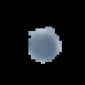
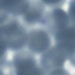

Cell Segmentation¶
Many tasks in digital pathology rely on analysis of cellular features, as opposed to higher-level architectural features. Slideflow supports whole-slide analysis of cellular features with a cell detection and segmentation pipeline based on Cellpose. To start, ensure cellpose has been installed via pip:
pip install cellpose
Approach¶
The general approach for cell detection and segmentation in Slideflow is illustrated above, and will be discussed in the following sections. In short, the general approach is to tune the cell segmentation parameters on a single slide, use these parameters to detect cells in all of your slides, then extract cell images at these locations.
Slideflow Studio¶
Cellpose models have several configurable parameters which will affect the quality of your segmentation masks, namely the pretrained model and cell diameter. The best way to determine the optimal parameters to use for your dataset is through interactive visualization using Slideflow Studio.
Use Cellpose-based cell segmentation in Slideflow Studio by enabling the extension, or start Studio with the --cellpose flag:
python -m slideflow.studio --cellpose
Control panel¶
Open the Cell Segmentation section in the control panel to access the segmentation controls.

The Model & Cell Diameter subsection is used to customize the segmentation model (defaults to ‘cyto2’) and cell diameter (defaults to 10 microns). Selecting “Auto-detect diameter” then clicking “Preview” will perform cell segmentation on the portion of the slide currently in view. Once complete, the diameter text box will be updated with the detected cell diameter. Any user-trained models will be listed in the model dropdown selection.
Viewing cell segmentations¶

The View Controls subsection provides options for customizing how cell segmentations are displayed. By default, cell segmentation masks are shown in cyan on a black background. The black background can be removed by unchecking “Black BG”. You can add a green dot at each cell’s detected centroid by selecting the “Centroid option.” The “Alpha” slider controls transparency for the mask overlay.
You can also choose to view the segmentation masks as outlines. The “Outline” button will convert any masks currently in view to outlines, allowing you to more easily see how the masks match cells visible on the slide.

Finally, the “gradXY” option will show the flow gradients calculated during cell segmentation.
Preparing WSI segmentation¶
Once you are satisifed with a chosen model and cell diameter, set the cell diameter to a manual value in microns. Once the cell diameter has been set, the middle control panel will activate, allowing you to perform whole-slide segmentation.
The Otsu threshold option will perform strict Otsu’s thresholding on the whole slide image, only performing cell segmentation in non-background areas (reducing computational time). You can preview the Otsu’s thresholding algorithm in the Slide section. This option is disabled by default, as Otsu’s thresholding does not work well for all slides (particularly cytology slides).
The Save flows option saves gradients during cell segmentation, allowing you to generate visualizations as shown with the gradXY option above. This is disabled by default, as calculation requires high RAM usage and may not be practical on all systems.
The Advanced subsection provides additional options for controlling the cell segmentation process. Window controls the window size during cell segmentation; cell segmentation is performed on images of this pixel size and then stitched together. The Tile option permits further sub- tiling of each window, reducing GPU and CPU memory utilization. Downscale will scale down the final generated cell segmentation mask, reducing memory utilization (both RAM and disk). Enable spawn workers enables a multiprocessing technique that improves cell segmentation speed at the cost of higher RAM usage. |

|
Running WSI segmentation¶
Once you are satisifed with the settings, whole-slide cell segmentation can be initialized by clicking Segment. You will see a notification in the bottom-right corner of the screen when segmentation is complete. In the meantime, a progress bar will be shown in the terminal along with ETA.
Exporting results¶
Once segmentation is complete, masks can be saved to disk for later use with Export. Masks are saved in *.zip format, and can be loaded in Studio with drag-and-drop.
Segmenting cells¶
Single slide segmentation¶
Once the segmentation parameters have been determined, you can run segmentation for a single slide using slideflow.cellseg.segment_slide().
import slideflow as sf
from slideflow.cellseg import segment_slide
segmentation = segment_slide(
'.../slide.svs',
model='cyto2',
diam_um=10,
...
)
segmentation.save('...masks.zip')
Project-wide segmentation¶
Cell segmentation can also be performed automatically for all slides in a Slideflow project.
Cell segmentation masks (and associated cell centroids) are calculated for all slides in the project using slideflow.Project.cell_segmentation().
import slideflow as sf
# Load a slideflow project
P = sf.Project(...)
# Perform cell segmentation
P.cell_segmentation(
model='cyto2',
diam_um=10
)
Relevant arguments for this function include:
model: Cell segmentation model. All cellpose models are supported, including ‘cyto’, ‘cyto2’, ‘nuclei’, and more.diam_um: Cell diameter, in microns.buffer: Path to a buffer, significantly speeds up segmentation if running from a HDD (same as P.extract_tiles())window_size: Integer. Defaults to 256. Increasing this to 512 will make things slightly faster, but will use a bit more GPU memory.downscale: Factor by which to downscale the masks, to save memory. Defaults to 1 (no downscaling, full resolution). Downscale of 2 is a nice balance between memory size and fidelity.
Depending on the size of the slide, this may take between 5-25 minutes per slide.
Masks will be saved in the project subfolder masks/ . As described above,
these masks can be loaded in Studio for interactive visualization via drag-and-drop.
They can also be used for downstream analysis and cell extraction, as described in the next
section.
Accessing segmentation masks¶
Saved cell segmentation masks (in *.zip format) can be loaded with slideflow.cellseg.Segmentation.
from slideflow.cellseg import Segmentation
seg = Segmentation.load('.../slide-masks.zip')
The mask array, Segmentation.masks , is a np.ndarray with dtype of np.uint32. Zero values are background, and masks for each cell are represented by a unique integer. Flows/gradients,
if calculated, will be available in Segmentation.flows.
Centroids for detected cells can be calculated with Segmentation.centroids(), returning an array of centroid locations. By default, coordinates are returned in mask dimension space. With the argument wsi_dim=True, centroid coordinates will be in the slide dimension space.
Caveats¶
There are some caveats to the cell segmentation process, including:
Memory usage: Cell segmentation requires at minimum 32 GB of RAM. Larger slides (particularly cytology) may require up to 64 GB of RAM.
Stitching artifacts: At present, due to the algorithm by which whole-slide cell segmentations are stitched together, you may see some cells that are not detected, missing in a grid-like pattern. Work is ongoing to reduce these stitching artifacts.
Cell diameter: The quality of cell segmentation results is highly dependent on an appropriately chosen cell diameter. Use Slideflow Studio to find the best cell diameter for your application.
Extracting cells from slides¶
Once segmentation masks have been calculated, images of individual cells can be extracted from a whole-slide image. This can be performed for either a single slide, or all slides in a project.
From a single slide¶
Start by loading the saved segmentation, as described above. Then, use slideflow.WSI.apply_segmentation(), followed by slideflow.WSI.extract_cells().
import slideflow as sf
from slideflow.cellseg import Segmentation
# Load WSI.
wsi = sf.WSI('../slide.svs', tile_px=96, tile_um='40x')
# Load cell segmentations.
seg = Segmentation.load('.../slide-masks.zip')
# Apply segmentations to the slide.
wsi.apply_segmentation(seg)
# Extract images of cells.
wsi.extract_cells(tiles_dir=...)
By default, segmentation masks will be applied to the extracted cell images: |
 |
However, you can choose not to apply masks by using the argument |
 |
Tile extraction is then performed as usual. Cell images (tiles) can either be saved as loose images or in TFRecord format. See slideflow.WSI.extract_cells() for more information.
From all slides¶
Additionally, cell images can be extracted from all slides in a project. This should only be
done after slideflow.Project.cell_segmentation().
P.extract_cells(
tile_px=96,
tile_um='40x',
apply_masks=True
)
Extracted cell images are saved by default in TFRecord format, and are otherwise handled
identically to tile images generated through slideflow.Project.extract_tiles().
Complete example¶
An example of a complete cell segmentation pipeline is shown below, from parameter tuning to final tile extraction from detected cells.
1. Slideflow Studio¶
Determine optimal cell segmenation parameters using Studio, as described above:
python -m slideflow.studio --cellpose
2. Cell segmentation¶
Segment cells for all slides in a Slideflow project.
P = sf.Project(...)
P.cell_segmentation(
model='cyto2',
diam_um=10,
window_size=512,
downscale=2
)
3. Cell image extraction¶
Extract image tiles of segmented cells, in this case using segmentation masks.
P.extract_cells(
tile_px=96,
tile_um='40x',
apply_masks=True,
grayspace_fraction=1
)